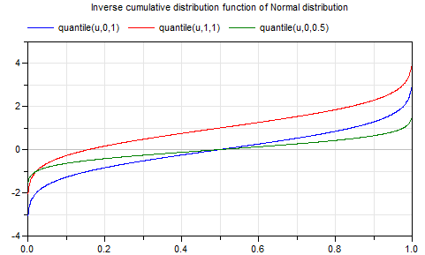

quantileQuantile of normal distribution |
|
Information
This information is part of the Modelica Standard Library maintained by the Modelica Association.
Syntax
Normal.quantile(u, y_min=0, y_max=1);
Description
This function computes the inverse cumulative distribution function (= quantile) according to a normal distribution with mean value mu and standard deviation sigma (variance = sigma2). Input argument u must be in the range:
0 < u < 1
If the input argument u is a uniformly distributed random number, then 99.7 % of the returned random numbers are in the range:
mu-3*sigma ≤ y ≤ mu+3*sigma
Plot of the function:

For more details, see Wikipedia.
Example
quantile(0.001) // = -3.090232306167813; quantile(0.5,1,0.5) // = 1
See also
Syntax
Inputs (3)
| u |
Type: Real Description: Random number in the range 0 <= u <= 1 |
|---|---|
| mu |
Default Value: 0 Type: Real Description: Expectation (mean) value of the normal distribution |
| sigma |
Default Value: 1 Type: Real Description: Standard deviation of the normal distribution |
Outputs (1)
| y |
Type: Real Description: Random number u transformed according to the given distribution |
|---|